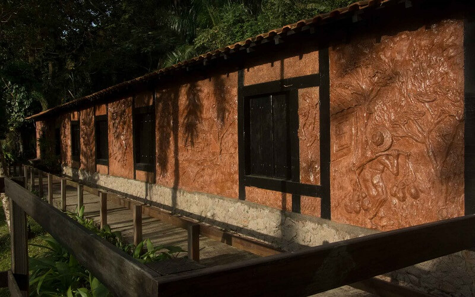
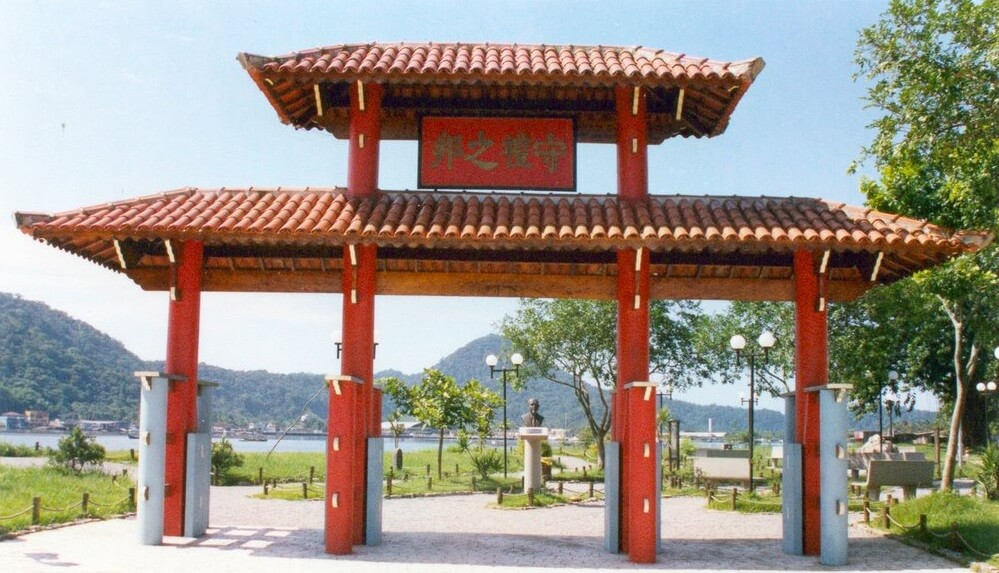

Casa Martim Afonso

R. Padre Manoel, 469 - Centro, São Vicente - SP, 11310-090
Memorial dos 500 Anos
Itararé, São Vicente - SP, 11320-380
Morro da Asa Delta

Local de prática do voo livre, possui um belo panorama, que abrange toda a Baía de Santos, com suas praias e o porto, e a praia de Itararé até a Ilha Porchat, em São Vicente. No alto do morro funciona a rampa de decolagem, a Escola de Parapente Dinâmica do Ar e uma lanchonete.
A Dinâmica do Ar oferece vôos em parapente com pilotos credenciados, voo duplo e voo triplo. Basta agendar, com 2 dias de antecedência. A escola funciona todos os dias, das 10h às 18h. O acesso de carro é feito pela Rua Monteiro Lobato, no José Menino. Também dá para subir pelo teleférico situado na praia do Itararé, em São Vicente.
(Teleférico) Av. Ayrton Senna da Silva 500 Praia Itararé São Vicente - SPCasa da Cultura Afro-Brasileira - Memorial ao Escravizado
Rua Dona Anita Costa, Parque Ecológico Voturuá, São Vicente - SP, 11380-300
Parque Ecológico Voturuá
Avenida Dona Anita Costa S/nº - Vila Voturuá, São Vicente - SP, 11380-300
Marco Padrão
Av. Embaixador Pedro de Toledo, 649-531 - Centro, São Vicente - SP, 11320-440
Ponte Pênsil

Parque Bitaru, São Vicente, 11310-100
Rua Japão
R. Japão - Parque Bitaru, São Vicente - SP
Biquinha
Praça 22 de Janeiro - Centro, São Vicente - SP, 11310-090
Morro dos Barbosas

Morro dos Barbosas, São Vicente - SP
Parque Cultural Vila de São Vicente
161, Praça João Pessoa, 103 - Centro, São Vicente - SP, 11310-250